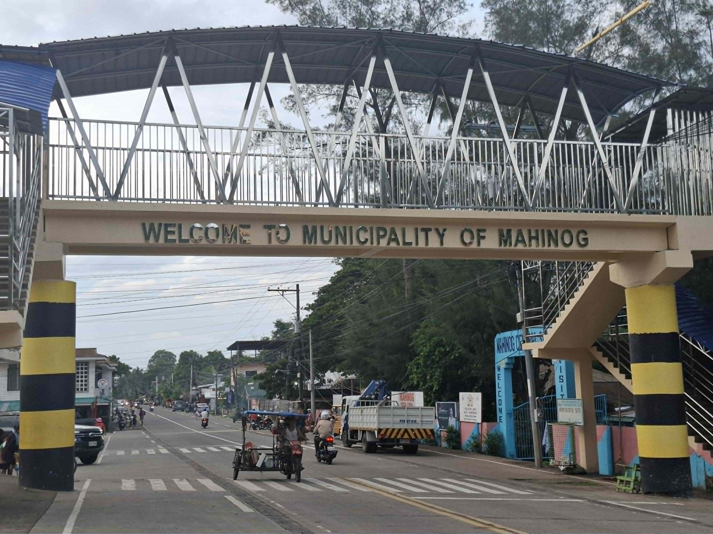
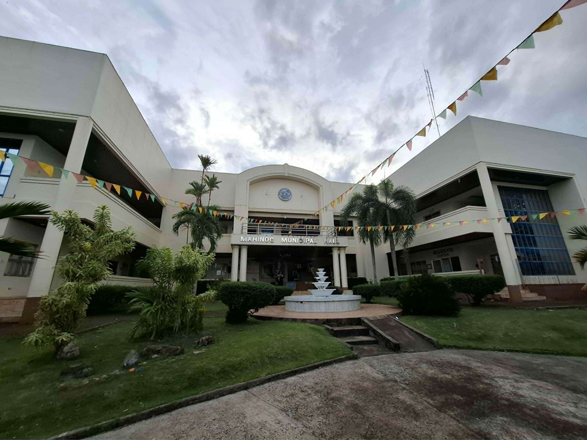

Our Story
About Mahinog
History, geography, and the people who call this barangay home.
Where we came from
Our History
It is said that in the early days, Mahinog grew luscious bananas of all kinds. The land was fertile but there were no crops or fruit tress that grew as abundant as the bananas; not even coconut trees which are now dominant crop of Camiguin Island.
With the unusual production and harvest of bananas, people started to call the place "Mahinog" or "Maginoog", Cebuano word meaning "to ripen" or "to become ripe". Finally, MAHINOG became the accepted town's name.

How we were governed
Political Development
During the Spanish regime, Mahinog was only a sitio of Sagay, which was itself a barrio of Catarman. On September 14, 1869, Mahinog was established as a civil town and remained one until 1903.
When the Americans occupied the Philippine archipelago, Mahinog was stripped of its status as a town and relegated to a barrio of Mambajao for forty-five (45) years. On July 1, 1948, Mahinog was again declared a municipality, by virtue of Executive Order No. 122, issued by then-President Manuel Roxas.

Find us
Location
Barangay Mahinog sits on the eastern coast of Camiguin Island, in the Municipality of Mahinog, Camiguin Province, Northern Mindanao (Region X). It is bordered by the Camiguin Strait to the east, with Benoni Port serving as the entry point for ferries arriving from Balingoan, Misamis Oriental.
The barangay is easily reached by tricycle or habal-habal (motorcycle taxi) from the port, and sits along the main coastal road that circles the island.
Our people
Population & Demographics
Total Population
No. Of Barangay
Total No. of Households
Primary language spoken
What guides us
Vision & Mission
Vision
Mahinog, a Mother-Earth friendly municipality, bolstered by sustainable eco-tourism and agriculture, driven by transparent, service-oriented and strong politically willed Seaden with morally responsible, empowered and healthy people living in a climate changa resilient environment.
Mission
To uplift the general well-being of the people by developing eco-tourism, agriculture, commerce, health, environment and infrastructure support locilities.